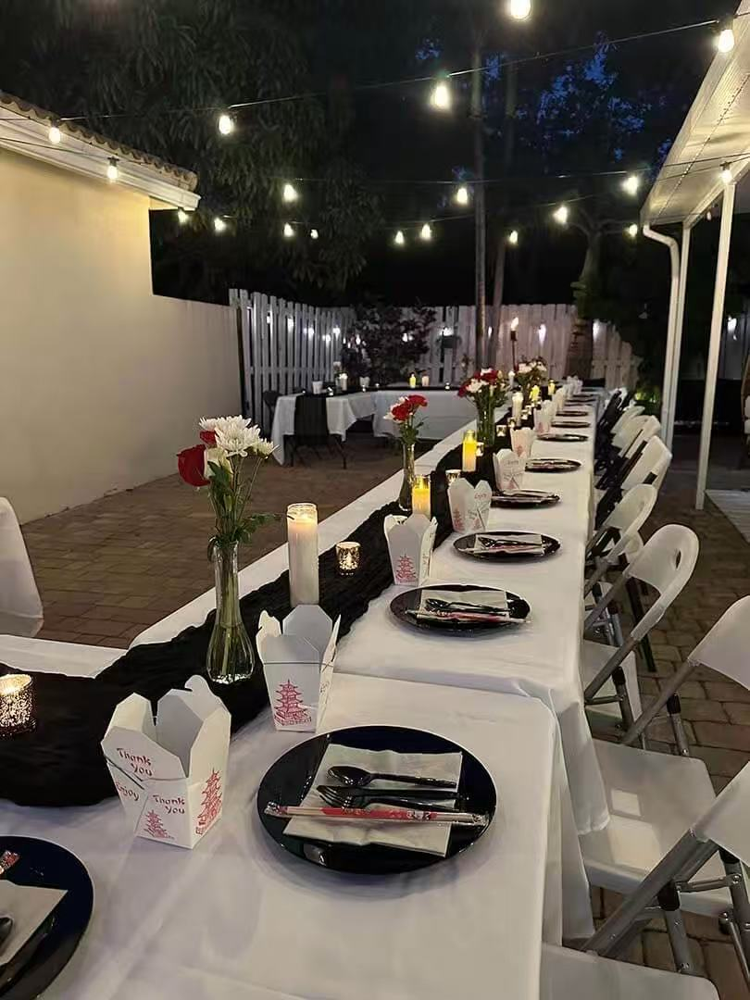

A1 Hibachi Party provides outdoor hibachi catering across Long Island including Nassau County and Suffolk County for backyard parties, birthdays, graduations, and private events.
Long Island Hibachi
Long Island is one of the best locations for backyard hibachi catering because homes have larger outdoor spaces, making it perfect for private chef experiences.
If you are searching for Long Island hibachi catering, private hibachi chef Long Island NY, Nassau County hibachi catering, or Suffolk County hibachi catering, A1 Hibachi Party brings the grill, chef, and full experience directly to you.

Long Island Event Ideas
Long Island is perfect for backyard hibachi parties, graduation celebrations, birthdays, family gatherings, and private outdoor events across Nassau and Suffolk County.
The #1 setup on Long Island. Turn your backyard into a private hibachi restaurant.
Perfect for high school and college graduations with large family gatherings.
Make birthdays unforgettable with fire shows and live chef entertainment.
A great alternative to restaurants — food + experience at home.
Perfect for Long Island summer nights, poolside events, and outdoor hosting.
Ideal for bigger parties where you want interactive food and entertainment.
A1 Hibachi Party provides Long Island outdoor hibachi catering across Nassau County and Suffolk County for customers searching for a private chef experience at home. If you are looking for hibachi catering near me in Long Island, private hibachi chef Long Island NY, backyard hibachi party Long Island, or outdoor hibachi catering Nassau or Suffolk County, A1 Hibachi Party brings live cooking, fresh proteins, fried rice, vegetables, premium upgrades, and hibachi entertainment directly to your event.
Ready To Book Long Island?
Submit your date, guest count, and event details. Our team will confirm availability, travel distance, and final pricing.